单张定稿：三分之四俯视 · 冬季蓝调时刻 · 冷暖对撞 · Cycles 240 spp
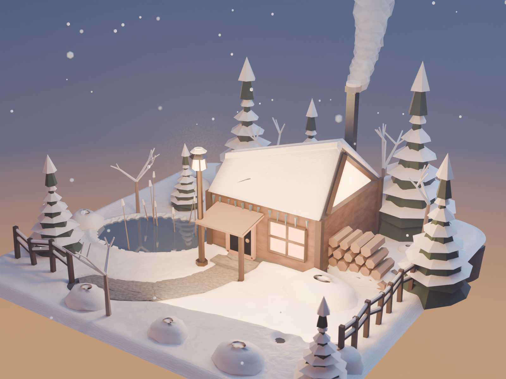
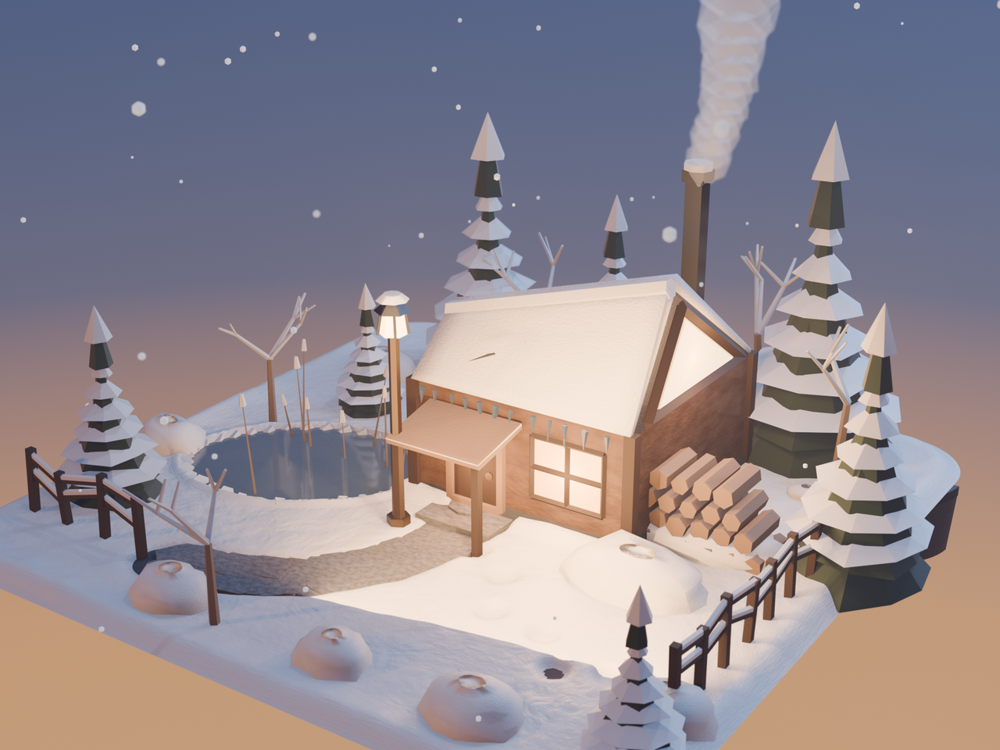
每轮先回看上轮出图再改脚本，共出图 16 版 + 2 轮终稿。前 8 轮几乎全在跟「天空渐变的方向映射」死磕。
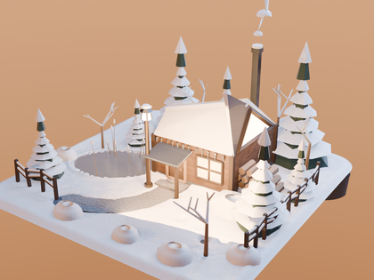
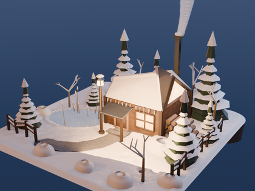
Geometry.Incoming 驱动渐变，蓝调终于出来，但地平线暖光看不见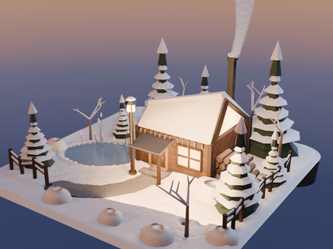
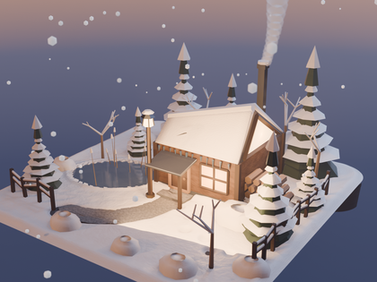
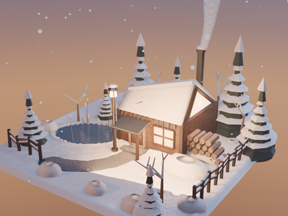
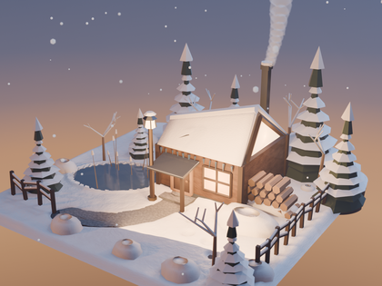
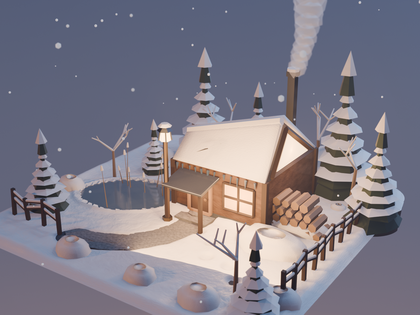
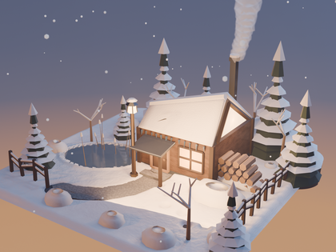
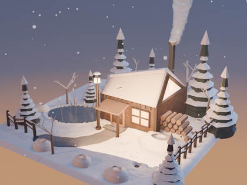
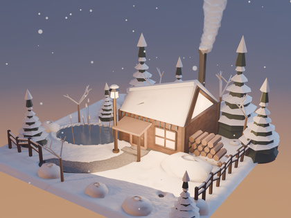
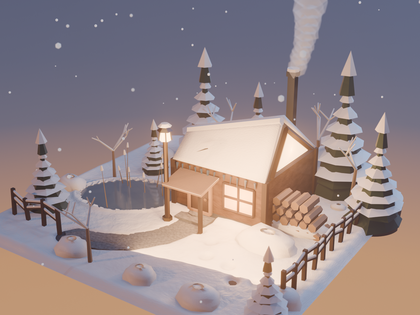
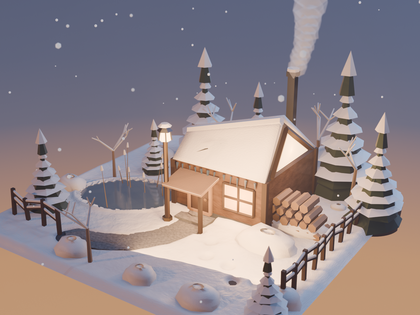
全部由脚本生成，无任何外部资产。以下几条是这轮里真正决定成败的地方。
TexCoord.Generated 在 World 里返回常量（天空直接变单色），必须改用 NewGeometry.Incoming → SeparateXYZ.Z → MapRange(-1..1 → 0..1) → ColorRamp。但映射关系不直观：先渲一张 8 段 CONSTANT 彩虹 ramp 的 640×480 标定图，反推出「画面高度 ↔ ramp 位置」的对应（本机相机下可见区间约 0.55–0.80），再据此摆暖色余晖带。RenderSettings.engine 的 enum_items 在本机 5.2.2 的 --factory-startup 下只返回 ['BLENDER_EEVEE']，但 render.engine = 'CYCLES' 实际是成功的。view_settings.view_transform 同样只报 NONE，而 AgX / Filmic / Standard 都能设。一律实测赋值，别信 enum。Scene.node_tree 已移除，改用 Scene.compositing_node_group（需自建 bpy.data.node_groups.new(name, "CompositorNodeTree") 并用 interface.new_socket 定义进出 socket）；CompositorNodeComposite / MixRGB 已不存在；Glare 节点的全部参数都改成了 input socket（Type、Threshold、Strength、Size、Tint 这些都是 inputs[...] 下的条目），旧属性名一律 AttributeError。setup_compositor() 并设 USE_BLOOM = False，需要时可以打开。shadow_pool_size 的枚举最大就是 2048，400+ 对象的场景必然报 "Shadow buffer full"。实测 visible_shadow = False 与 shadow_ray_count = 1 都不能降低这个计数——只能合并对象，或者接受它（实际视觉影响极小）。snow_slab_grid() 把四边形细分成 9×9 网格，沿法线按「檐口薄、屋脊厚」的厚度函数抬高，再叠一层带边界衰减的噪声；边缘自动收口到 0，所以檐口不会翘边、屋脊自然堆高。mesh.use_auto_smooth。平滑着色 + 保留硬边要用「polygon.use_smooth = True + 按面夹角标 edge.use_edge_sharp」这个组合，不要再调 shade_smooth_by_angle 算子（它在 background 模式下还要依赖 context）。| 展示底座 | 1.6 × 1.6 × 0.15 m 圆角方形石台（倒角半径 0.17），雪原轮廓内缩 24 mm 做浮雕式覆盖，边缘自然收口露出深色台沿 |
|---|---|
| 小屋 | 占地 0.50 × 0.50 m，檐口高 0.262 m；屋脊左右不等高 —— 左翼 0.360 / 右翼 0.505，形成不对称楔形屋顶与整面三角玻璃山墙 |
| 院落 | 扫雪小径与不规则石板、结冰池塘与冻芦苇、7 株雪压雪松 / 5 株挂霜枯桦 / 8 丛雪埋灌木、木栅栏、暖光路灯、柴堆、门口脚印、飘雪与一层有限体积雾 |
| 相机 | 55mm（36mm 画幅），方位角 34° / 仰角 22.5°，距主体 3.02 m，to_track_quat('-Z','Y') 求朝向；f/6.3 微景深强化微缩感 |
| 灯光 | 9 盏：暮色暖阳 Sun + 冷蓝天光面光 + 冷色轮廓光 + 4 处窗口/山墙漏光 + 路灯 + 暖色回弹面光 |
| 材质 | 24 个程序化节点材质：雪（次表面 + 噪声凹凸）、冰（透射 0.6 + Coat）、木材、板岩、暖光玻璃、金属、针叶、烟雾等 |
| 渲染 | Cycles CPU 240 spp + 降噪（468 秒）／ EEVEE 192 spp（约 60 秒），AgX 色彩管理 |
| 规模 | 446 个对象 · 47,142 面 · 47,509 顶点 · 24 材质 · 0 个外部资源 |
建模脚本与工程文件可直接下载复用。